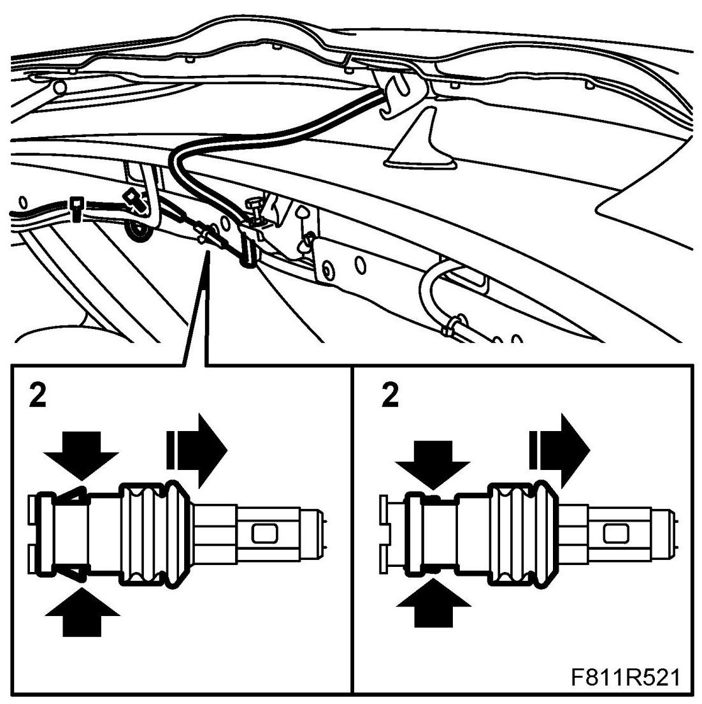
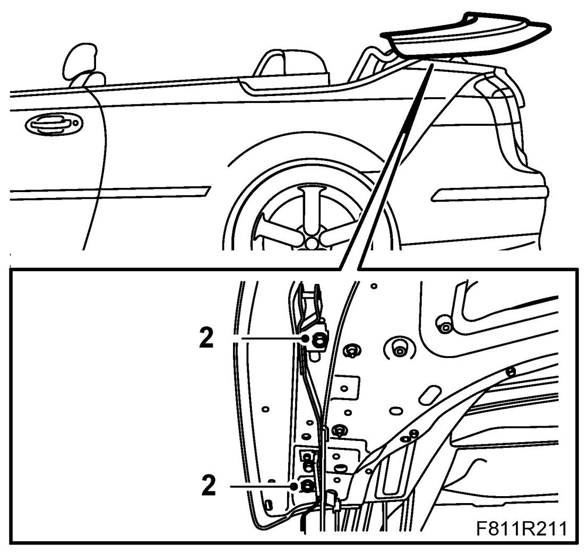
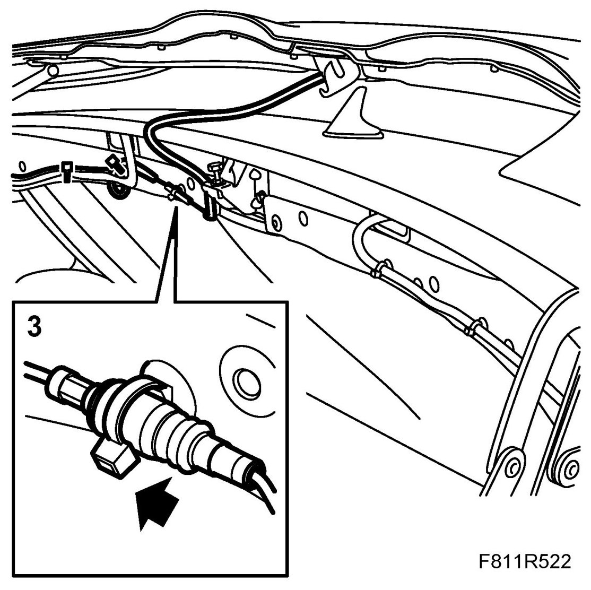

Soft Top Cover
Soft Top Cover
To remove
1. Open the soft top cover.
2. Unplug the connector by holding the antenna cable and at the same time pulling the finger grip towards the antenna cable. Remove the soft top cover.

3. Make a note of the position of the rear bolts in relation to the scale. Remove the soft top cover bolts.
To fit
1. Place the soft top cover in position for fitting.
2. Fit the bolts to the soft top cover. Fit the rear bolts in the same position as previously.

3. Fit the antenna cable connector.

4. Check the fit of the soft top cover. Adjust as necessary, see Adjustment, soft top cover
5. Close the soft top cover.